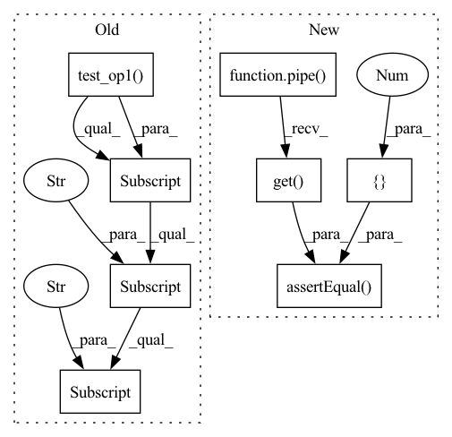

Pattern ID :22331

Before Change
def test_time_window(self):
pipe0 = Pipeline.input("a", "b", "c")
pipe1 = pipe0.time_window("a", "d", "c", 2, 2, ops.test_op1())
self.assertEqual(pipe1.dag[pipe1._clo_node]["iter_info"]["type"], "time_window")
def test_window(self):
pipe0 = Pipeline.input("a", "b", "c")
After Change
.time_window(("n1", "n2"), ("s1", "s2"), "t", 10, 5, ops.local.sum2())
.output("s1", "s2"))
data = [(i, i+1, i * 1000) for i in range(100) if i < 3 or i > 91]
res = pipe(data)
self.assertEqual(res.get(), [3, 6])
self.assertEqual(res.get(), [764, 772])
self.assertEqual(res.get(), [485, 490])
def test_window(self):
pipe = (Pipeline.input("n1", "n2")
.flat_map(("n1", "n2"), ("n1", "n2"), lambda x, y: list(zip(x, y)))
In pattern: SUPERPATTERN
Frequency: 3
Non-data size: 8
Instances
Fragment ID: 70468199
Project Name: towhee-io/towhee
Commit Name: 7800c77fc16fb6085f2496817fce5b285f859034
Time: 2022-11-01
Author: shiyu.chen@zilliz.com
File Name: tests/unittests/runtime/test_user_pipeline.py
M Class Name: TestPipeline
N Class Name: TestPipeline
M Method Name: test_time_window(1)
N Method Name: test_time_window(1)
M Parent Class: unittest.TestCase
N Parent Class: unittest.TestCase
M File Name: tests/unittests/runtime/test_user_pipeline.py
N File Name: tests/unittests/runtime/test_user_pipeline.py
M Start Line: 133
M End Line: 135
N Start Line: 209
N End Line: 217
'>
Before Change
def test_window_all(self):
pipe0 = Pipeline.input("a", "b", "c")
pipe1 = pipe0.window_all("a", "d", ops.test_op1())
self.assertEqual(pipe1.dag[pipe1._clo_node]["iter_info"]["type"], "window_all")
After Change
.flat_map(("n1", "n2"), ("n1", "n2"), lambda x, y: list(zip(x, y)))
.window_all(("n1", "n2"), ("s1", "s2"), ops.local.sum2())
.output("s1", "s2"))
res = pipe([1, 2, 3, 4], [2, 3, 4, 5])
self.assertEqual(res.get(), [10, 14])
'>
Fragment ID: 70468197
Project Name: towhee-io/towhee
Commit Name: 7800c77fc16fb6085f2496817fce5b285f859034
Time: 2022-11-01
Author: shiyu.chen@zilliz.com
File Name: tests/unittests/runtime/test_user_pipeline.py
M Class Name: TestPipeline
N Class Name: TestPipeline
M Method Name: test_window_all(1)
N Method Name: test_window_all(1)
M Parent Class: unittest.TestCase
N Parent Class: unittest.TestCase
M File Name: tests/unittests/runtime/test_user_pipeline.py
N File Name: tests/unittests/runtime/test_user_pipeline.py
M Start Line: 143
M End Line: 145
N Start Line: 237
N End Line: 242
'>
Before Change
def test_filter(self):
pipe0 = Pipeline.input("a", "b", "c")
pipe1 = pipe0.filter("a", "d", "c", ops.test_op1())
self.assertEqual(pipe1.dag[pipe1._clo_node]["iter_info"]["type"], "filter")
def test_time_window(self):
pipe0 = Pipeline.input("a", "b", "c")
After Change
pipe = (Pipeline.input("a")
.filter("a", "b", "a", ops.local.filter_operator(5))
.output("b"))
res = pipe(5)
self.assertEqual(res.get(), None)
res = pipe(7)
self.assertEqual(res.get(), [7])
def test_multi_filter(self):
def filter_func(x, y):
return x > 10 and y > 5
'>
Fragment ID: 70468203
Project Name: towhee-io/towhee
Commit Name: 7800c77fc16fb6085f2496817fce5b285f859034
Time: 2022-11-01
Author: shiyu.chen@zilliz.com
File Name: tests/unittests/runtime/test_user_pipeline.py
M Class Name: TestPipeline
N Class Name: TestPipeline
M Method Name: test_filter(1)
N Method Name: test_filter(1)
M Parent Class: unittest.TestCase
N Parent Class: unittest.TestCase
M File Name: tests/unittests/runtime/test_user_pipeline.py
N File Name: tests/unittests/runtime/test_user_pipeline.py
M Start Line: 128
M End Line: 130
N Start Line: 180
N End Line: 186